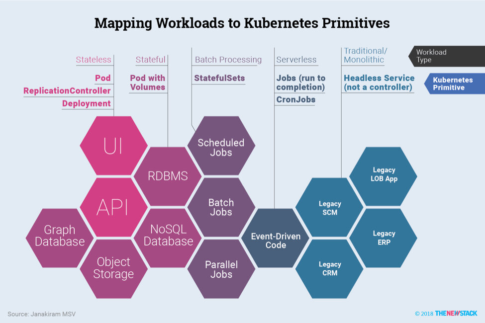

本文为翻译文章，点击查看原文。
Kubernetes 不仅仅是一个容器管理工具。它是一个平台，旨在处理包装在任意数量的容器和组合中的各种工作负载。Kubernetes内置了多个控制器，可映射到云原生架构的各个层。
DevOps工程师可以将Kubernetes控制器视为指示团队运行的各种工作负载的基础架构需求的手段。他们可以通过声明方法定义所需的配置状态。例如，容器/pod作为ReplicationController的一部分部署保证始终可用。打包为DaemonSet的容器保证在集群的每个节点上运行。声明式的方法使DevOps团队能够利用代码控制基础架构。下面讨论的一些部署模式遵循不可变基础结构的原则，其中每个新的部署都会导致原子部署。

DevOps工程师可以通过声明方法定义所需的配置状态——每个工作负载映射到控制器。
了解云原生用例
Kubernetes的控制平面不断跟踪部署，以确保它们符合DevOps定义的所需配置状态。
Kubernetes的基本部署单位是一个pod。它是Kubernetes的基本构建块，是Kubernetes对象模型中最小和最简单的单元。pod表示集群上正在运行的进程。无论服务是有状态的还是无状态的，它总是打包并部署为pod。
控制器可以在集群中创建和管理多个pod，处理在集群范围内提供自我修复功能的副本。例如，如果节点发生故障，控制器可能会通过在不同节点上安排相同的pod用来自动替换该故障pod。
Kubernetes配有多个控制器，可以处理所需的pod状态。如ReplicationController、Deployment、DaemonSet和StatefulSet控制器。Kubernetes控制器使用提供的pod模板，来创建其负责pod的所需状态。与其他Kubernetes对象一样，Pod在YAML文件中定义并提交给控制平面。
在Kubernetes中运行云原生应用程序时，运维人员需要了解控制器解决的用例，以充分利用平台的特性。这有助于他们定义和维护应用程序的所需配置状态。
上一节中介绍的每种模式都映射到特定的Kubernetes控制器，这些控制器允许对Kubernetes的工作负载进行更精确，细粒度的控制，但是采用自动化方式。
Kubernetes的声明式配置鼓励不可变的基础架构。控制平面跟踪和管理部署，以确保在整个应用程序生命周期中维护所需的配置状态。与基于虚拟机的传统部署相比，DevOps工程师将花费更少的时间来维护工作负载。利用Kubernetes原语和部署模式的有效CI/CD策略使运营商无需执行繁琐的任务。
可扩展层：无状态工作负载
无状态工作负载在Kubernetes中打包并部署为ReplicaSet。ReplicationController构成ReplicaSet的基础，可确保在任何给定时间始终运行指定数量的pod副本。换句话说，ReplicationController确保一个pod或一组同类pod总是可用。
如果有太多pod，ReplicationController可能会终止额外的pod。如果太少，ReplicationController将继续启动其他pod。与手动创建的pod不同，ReplicationController维护的pod在失败，删除或终止时会自动替换。在诸如内核升级之类的破坏性维护之后，在节点上重新创建pod。因此，即使应用程序只需要一个pod，也建议使用ReplicationController。
一个简单的用例是创建一个ReplicationController对象，以无限期地可靠地运行pod的一个实例。更复杂的用例是运行横向扩展服务的几个相同副本，例如Web服务器。在Kubernetes中部署时，DevOps团队和运营商将无状态工作负载打包为ReplicationControllers。
在最近的Kubernetes版本中，ReplicaSets取代了ReplicationControllers。它们都针对相同的场景，但ReplicaSet使用基于 集合的标签选择器 ，这使得可以使用基于注释的复杂查询。此外，Kubernetes中的部署依赖于ReplicaSet。
Deployment是ReplicaSet的抽象。在Deployment对象中声明所需状态时，Deployment控制器会以受控速率将实际状态更改为所需状态。
强烈建议部署管理云原生应用程序的无状态服务。虽然服务可以部署为pod和ReplicaSet，但部署可以更轻松地升级和修补应用程序。DevOps团队可以使用部署来升级pod，而无法使用ReplicaSet完成。这样就可以在最短的停机时间内推出新版本的应用程序。部署为应用程序管理带来了类似于服务（PaaS）的功能。
持久层：有状态的工作量
状态工作负载可以分为两类：需要持久存储的服务（单实例）和需要以高可靠性和可用模式运行的服务（复制的多实例）。需要访问持久存储后端的pod与为关系数据库运行集群的一组pod非常不同。虽然前者需要长期持久的持久性，但后者需要高可用性的工作量。Kubernetes解决了这两种情况。
可以通过将底层存储暴露给服务的卷来支持单个pod。可以将卷映射到调度pod的任意节点。如果在集群的不同节点上调度多个pod并需要共享后端，则在部署应用程序之前手动配置分布式文件系统（如网络文件系统（NFS）或Gluster）。云原生态系统中提供的现代存储驱动程序提供容器本机存储，其中文件系统本身通过容器公开。当pod只需要持久性和持久性时，请使用此配置。
对于预计具有高可用性的场景，Kubernetes提供StatefulSets - 一组专门的pod，可确保pod的排序和唯一性。这在运行主要/辅助（以前称为主/从）数据库集群配置时尤其有用。
与部署类似，StatefulSet管理基于相同容器规范的pod。与Deployment不同，StatefulSet为其每个pod保留唯一标识。这些pod是根据相同的规范创建的，但不可互换：每个pod都有一个持久标识符，它可以在任何重新安排时保留。
StatefulSet对需要以下一项或多项的工作负载非常有用：
- 稳定，独特的网络标识符。
- 稳定，持久的存储。
- 有序，优雅的部署和扩展。
- 有序，优雅的删除和终止。
- 有序的自动滚动更新。
Kubernetes对StatefulSets的处理方式与其他控制器不同。当正在使用N个副本调度StatefulSet的pod时，将按顺序创建它们，顺序从0到N-1。当删除StatefulSet的pod时，它们以相反的顺序终止，从N-1到0。在将一个扩展操作应用于pod之前，它的所有前驱必须正在运行并准备就绪。Kubernetes确保在终止pod之前，其所有后继者都完全关闭。
当服务需要运行Cassandra、MongoDB、MySQL、PostgreSQL集群或任何具有高可用性要求的数据库工作负载时，建议使用StatefulSet。
并非每个持久性工作负载都必须是StatefulSet。某些容器依赖于持久存储后端来存储数据。为了向这些类型的应用程序添加持久性，pod可能依赖于由基于主机的存储或容器本机存储后端支持的卷。
可并行化层：批处理
Kubernetes具有用于批处理的内置原语，这对于执行运行到完成作业或预定作业很有用。
运行到完成作业通常用于运行需要执行操作和退出的进程。在处理数据之前运行的大数据工作负载就是这种工作的一个例子。另一个示例是一个处理队列中每条消息的作业，直到队列变空。
作业是一个控制器，可以创建一个或多个pod并确保指定数量的pod成功终止。当pod成功完成后，Job会跟踪成功的完成情况。达到指定数量的成功完成后，作业本身就完成了。删除作业将清理它创建的pod。
Job还可以用于并行运行多个pod，这使其成为机器学习培训工作的理想选择。Job还支持并行处理一组独立但相关的工作项。
当Kubernetes在具有GPU的硬件上运行时，机器学习培训可以利用Job。诸如Kubeflow之类的新兴项目 - 一个致力于在Kubernetes上部署机器学习的简单，可移植和可扩展的项目 - 将把原始资料作为job包装到机器学习培训中。
除了运行并行化作业外，可能还需要运行预定作业。Kubernetes公开了CronJobs，它可以在指定的时间点运行一次，也可以在指定的时间点定期运行。Kubernetes中的CronJob对象类似于Unix中crontab（cron表）文件的一行。它以给定的时间表定期运行，以cron格式编写。
Cron作业对于安排定期作业（如数据库备份或发送电子邮件）特别有用。
事件驱动层：无服务器（Serverless）
无服务器计算（Serverless）是指构建和运行不需要服务器管理的应用程序的概念。它描述了一种更细粒度的部署模型，其中捆绑为一个或多个功能的应用程序上传到平台，然后执行，缩容和计费以响应当前所需的确切需求。
函数即服务（FaaS）在无服务器计算的环境中运行，以提供事件驱动的计算。开发人员使用由事件或HTTP请求触发的功能来运行和管理应用程序代码。开发人员将小型代码单元部署到FaaS，这些代码根据实际需要作为独立组件执行，无需管理服务器或任何其他底层基础架构即可进行扩展。
虽然Kubernetes没有集成的事件驱动原语来响应其他服务引发的警报和事件，但仍有努力引入事件驱动的功能。该云原生计算基金会 ，Kubernetes的托管者，一直专注于这些致力于无服务器的工作组。Apache OpenWhisk 、Fission 、Kubeless 、OpenFaaS 和 Oracle的Fn 等开源项目可以在Kubernetes集群中作为事件驱动的无服务器层运行。
在无服务器环境中部署的代码与打包为pod的代码根本不同。它由自治函数组成，可以连接到可能触发代码的一个或多个事件。
当事件驱动计算——无服务器计算成为Kubernetes不可或缺的一部分时，开发人员将能够部署响应Kubernetes控制平面生成的内部事件以及应用程序服务引发的自定义事件的函数。
遗留层：Headless Service
即使您的组织经常使用微服务架构构建和部署应用程序到云上的容器中，也可能有一些应用程序继续存在于Kubernetes之外。云原生应用程序和服务必须与那些传统的单一应用程序进行交互。
遗留层的存在是为了实现互操作性，以暴露一组指向单体应用程序的Headless Service。Headless Service允许开发人员通自由地以自己的方式进行服务发现来减少与Kubernetes系统的耦合。Kubernetes中的Headless Services与ClusterIP、NodePort和LoadBalancer类型的服务不同。它们没有分配给它们的Internet协议（IP）地址，但具有指向外部端点（如API Server、Web服务器和数据库）的域名系统（DNS）条目。遗留层是一个逻辑互操作性层，它将DNS记录维护到众所周知的外部端点。
微服务应用程序的每一层都可以映射到Kubernetes的一个控制器。根据希望部署的模式，DevOps团队可以进行相应的选择。在下一篇文章中，我们将讨论将云原生应用程序部署到Kubernetes的一些最佳实践。
关于作者
Janakiram MSV是Janakiram＆Associates的首席分析师，也是国际信息技术学院的兼职教员。他还是Google认证云开发人员，亚马逊认证解决方案架构师，亚马逊认证开发人员，亚马逊认证SysOps管理员和Microsoft认证Azure专业人员。Janakiram是云原生计算基金会的大使，也是最早的认证Kubernetes管理员和认证Kubernetes应用程序开发人员之一。他之前的经历包括Microsoft、AWS、Gigaom Research和Alcatel-Lucent。